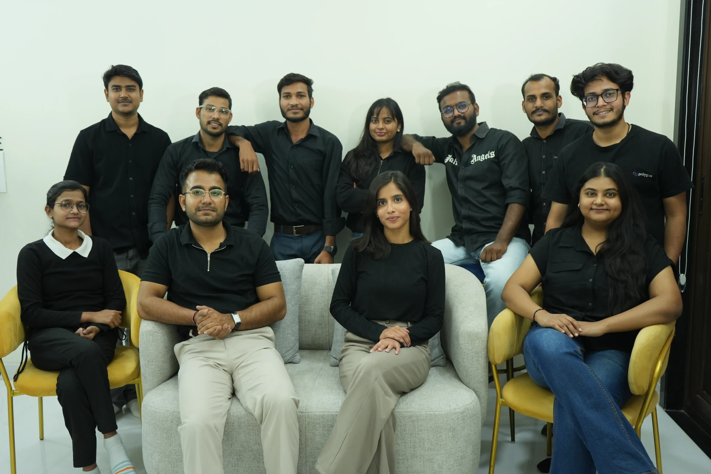

Built from curiosity. Powered by chaos. Made for brands that want more.
635px
Qrious Curators didn’t start as a perfectly polished agency story. It started with questions, ideas, experiments, edits, re-edits, and the belief that brands deserve marketing that feels alive.
We grew into a team that brings together strategy, content, design, websites, performance, and storytelling under one very energetic roof.
We don’t just create campaigns. We decode brands, find their voice, build their world, and make sure people notice.